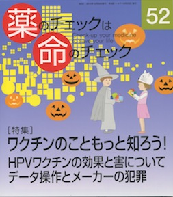

No.52 [特集] ワクチンのこともっと知ろう！ 2013年10月 発行
HPVワクチンの効果と害について
データ操作とメーカーの犯罪

ワクチンのこともっと知ろう！
母子手帳にはたくさんの予防接種が記載されています。
「定期接種」だの、「任意接種」だの、
種類によって受ける年齢も回数も違う。
てんてこ舞いですね。
でも、ほんとうに必要なのでしょうか？
受ける、受けないは選んでいい？
ワクチンのことも、それで予防できるという病気のことも、
実は、なあんにも知らない…
大切なこどもの命にかかわることかもしれないのに。
今からでも遅くない。
もっと知ろう！ そして判断しよう！
もくじ
Main Feature 特集 ワクチン Part1 HPV
特集にあたって 編集部
ワクチンへの理解を深めよう 谷田憲俊
感染症と栄養と衛生と 編集部
HPVワクチン Q&A
HPVワクチンは中止を 浜 六郎
実態調査と被害者の救済を
HPVワクチンの効果と害反応
ワクチンと害との関係を考える
開業小児科医が徒然思うこと 高木泰子
情報公開関連
バルタルサンのデータ捏造について
臨床試験研究の不正に厳罰を 隈本邦彦
ノバルティスファーマ社員は捏造の痕跡を残した？ 谷田憲俊
■ 海外情報 巨大製薬企業による犯罪
提言：薬剤の承認根拠は全面開示を 浜 六郎
第14回薬害根絶デーに参加して
異常行動や突然死はタミフルの副作用（害反応）です 秦野竜子
Series 連載
■ 医師国家試験に挑戦しよう！⑱ 木元康介
■ コーヒー無礼区 ○○に好かれる 坂口啓子
■ リレーエッセイ 脳梗塞を発症しました（補足：コレステロールと脳梗塞） 春本幸子
■ みんなのやさしい生命倫理(52) 生老病死(22) 谷田憲俊
■ 新・市民の視点 くすりについて思うこと 門田裕志
■ 医師国家試験の解答と解説
Others
質問箱 ステント手術の必要性と危険度について
降圧剤を止めたいと主治医に伝えるには？
麻疹、破傷風ワクチンについて／タミフルについて
読者の声
書評
バックナンバー一覧 / 書籍申込用紙
編集後記/奥付